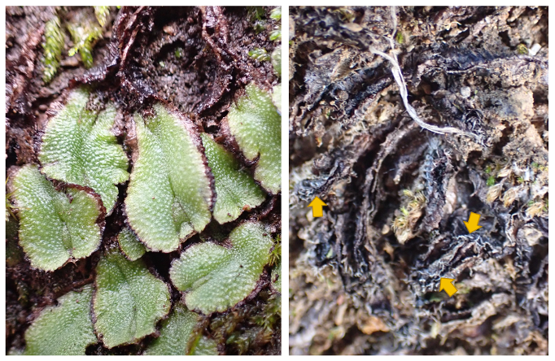

Liverwort scales morphology, function, and evolution
Written on December 5th, 2024 by Ixchel S. González Ramírez
Complex thalloid liverworts occurr are cosmopolitan plants. Although they are commonly thought to occurr in wet environments, they also occurr in seasonal and dry environments. While doing fieldwork across California, I became interested in the “rolling up” mechanism that some xerophytic complex thalloid liverworts display.
When dessicated, species like Calasterella californica, Targionia hypophylla, and Reboulia hemisphaerica thalli are surounded by its ventral scales. Interestingly, the ventral scales of all these species are red, a color that is commonly associated with UV-protective pigments.
During 2023-2024, I worked with two undergraduate researchers—Atra Shahryari and Riya Jain—testing the idea that the scales of C. californica protect the dessicated thalli against excess UV radiation. This research was recently published in Madroño, you can read the paper HERE.
 Calsterella californica hydrated (left) and dry (right). When the liverwort is hydrated, the scales are hidden between the thallus and the soil. The yellow arrows point to some scales that become exposed when the thallus is dried.
Ongoing and future work
Our work with Calasterella californica suggests that the red ventral scales of liverworts that roll up might play an important role in liverwort adaptation to dry and exposed environments. In collaboration with John McLaughlin, we are working on documenting scale morphology across the family Aytoniaceae, and how it realtes to the ‘rolling up’ strategy.
Some of the questions that I am planning to address in the future are: what is the developmental origin of ventral scales? How do scale-morphology relates to scale function across complex thalloid liverworts? Is there a correlation between scale morphology, the ‘rolling-up’ strategy, and the environment that different lineages of liverworts occur in?